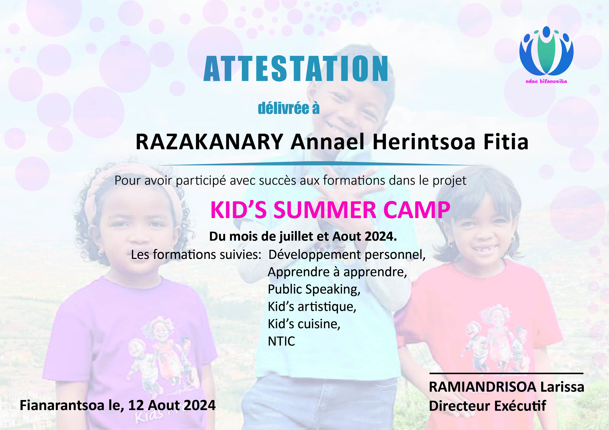

SiriusXM
Sirius XM Holdings Inc. 1st February 2024
2023 Fourth Quarter & Full-Year Operating and Financial Results
SiriusXM is the leading audio entertainment company in North America with a portfolio of audio businesses including its flagship subscription entertainment service SiriusXM; the ad-supported and premium ...

Writing in Waves
13th July 2023
"demo nights." and the transformative process of grief
You can witness the mark of grief, if you recognize the signs. Consider the desire to share memories, good and bad, and the deep sigh when a sensitive one is found. Notice the simple items, like a denim jack ...

Carpark Records
7th September 2022
Hans Pucket share new single "No Drama" - Carpark Records
a new single from New Zealand's Hans Pucket is out now called "No Drama", the title track of their forthcoming album out Nov. 4th ❤️

Writing in Waves
15th November 2021
Running Non-Stop: Malachi Quarles' unbelievable drive to create
Worn couches and wooden chairs surround a makeshift stage in Georgetown University's Midnight Mug. Malachi Quarles, a tall, lanky man with twisted hair that falls

Writing in Waves
15th November 2021
Running Non-Stop: Malachi Quarles' unbelievable drive to create
Worn couches and wooden chairs surround a makeshift stage in Georgetown University's Midnight Mug. Malachi Quarles, a tall, lanky man with twisted hair that falls

Writing in Waves
15th November 2021
Running Non-Stop: Malachi Quarles' unbelievable drive to create
Worn couches and wooden chairs surround a makeshift stage in Georgetown University's Midnight Mug. Malachi Quarles, a tall, lanky man with twisted hair that falls